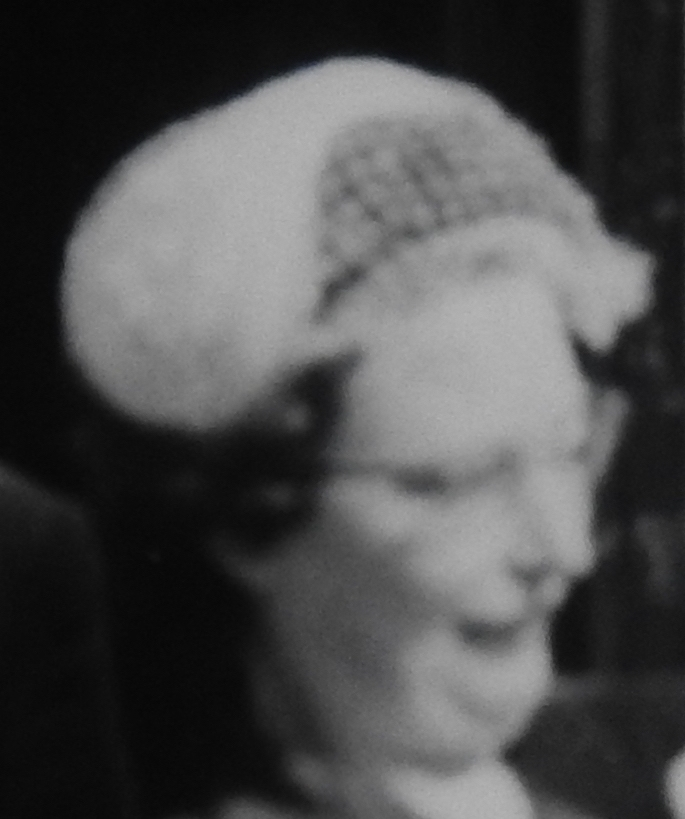
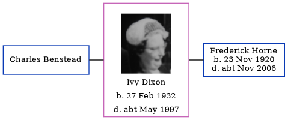

Ivy Benstead (née Dixon) 1932 - c1997
[ Home ] | [ Calendar ] | [ Surnames Index ] | [ Errors ] | [ Family History ]Ivy Dixon, the wife of Frederick Norman Horne (the uncle of Nigel Horne), was born in Blean, Kent, England on 27 Feb 19321,2,3. She was married twice - to Charles Benstead (in Dec 1953 in Thanet, Kent, England) Frederick Horne (c. Aug 1961 in Thanet)4. On 29 Sept 1939, she was living at Rushbourne Manor, Hoath, Kent1.
She died c. May 1997 in Thanet3.
Citations
- 1939 Register - Findmypast (was recorded at this address)
- England & Wales births 1837-2006 - Findmypast
- England & Wales deaths 1837-2007 - Findmypast
- England & Wales, Marriage Index: 1916-2005 Online publication - Provo, UT, USA: The Generations Network, Inc., 2009.Original data - General Register Office. England and Wales Civil Registration Indexes. London, England: General Register Office. © Crown copyright. Published by permission of the Cont
Media
Ivy Benstead

England & Wales marriages 1837-2008 Transcription - BMD-M-1961-3-AZ-000794-085
England & Wales marriages 1837-2008 Transcription - BMD-M-1961-3-AZ-000123-054
England & Wales deaths 1837-2007 - BMD/D/1997/4/81989978
England & Wales marriages 1837-2005 - BMD/M/1953/4/AZ/000292/106
1939 Register - TNA/R39/1801/1801C/006/40
England & Wales births 1837-2006 - BMD/B/1932/1/AZ/000296/116
Family Tree
Map
Generated by ged2site. Last updated on Jul 3, 2024